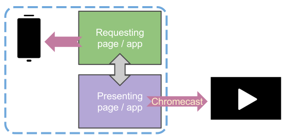

Presentation API in a nutshell
[:schien]
What is Presentation API?
to allow web page to utilize secondary screen
from javascript
Standardization Progress
Who support this?
- Mozilla
- Fennec Nightly since release 53
- Use Google Chromecast as an extended screen
- Google
How to use this API?
Simply request for starting a presentation
// in primary.html
var request = new PresentationRequest('secondary.html');
request.start().then(function(connection) {
connection.onconnect = function() {
// presentation launched successfully
};
});
Browser provides a device selection UI.
Web page cannot get the list of available devices.
Interaction between screens
Define your own command
Send via message-based channel
// in primary.html
nextBtn.onclick = function() {
connection.send('next');
};
// in secondary.html
navigator.presentation.receiver.connectionList
.then(function(connList) {
var connection = connList.connections[0];
connection.onmessage = function(evt) {
if (evt.data === 'next') {
slideShow.next();
}
};
});
How does it work on Fennec?
- Leverage Remote Display API on Android
- Open presenting page in a background window

Future Works
- Interoperability
- Protocol discussion via W3C second screen CG
- Support on Firefox desktop
- Enable interaction between Firefox and Fennec
- Support Many-to-one session
Acknowledgments
Aaron Wu,
Chun-Min Chang,
Cynthia Tang,
Gary Chen,
Jim Chen,
Junior Hsu,
Kershaw Chang,
Olli Patty,
Tommy Kuo,
Tori Chen